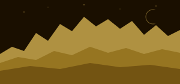
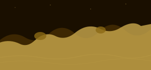
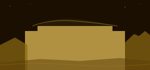
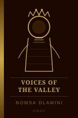
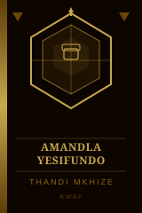
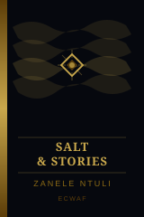
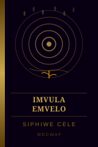

Empowering Women's Voices Through Literature
KWAF unites women writers, poets, and storytellers from KwaZulu-Natal and beyond. We amplify African women's narratives across six South African languages — creating space for every voice, every story, every dream.
The KZN Women Authors Forum was founded to create a platform where women writers across KwaZulu-Natal could connect, grow, and publish their stories. We believe African women's literature is a cornerstone of our cultural heritage — carrying the past, shaping the present, and igniting the future.
Our forum spans three provinces — KZN, Eastern Cape, and Cape Town — under a shared mission: to elevate women's literary voices and bring African stories to local and global audiences. Through workshops, events, and publications, we nurture talent at every stage of the journey.
Three forums, one shared voice. Each branch serves its region while contributing to the national KWAF family.







"Imfundo ayibi" — Knowledge is never stolen · KWAF · ECWAF · WECWAF